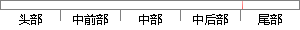

最后，向百忙之中评审论文以及参加答辩的各位专家学者致以诚挚的谢意。
片段位置图

相似结果|
1
原句片段：最后，向百忙之中评审论文以及参加答辩的各位专家学者致以诚挚的谢意。
相似片段 1：在此向老师表示最诚挚的谢意!在本论文的写作过程中...在百忙之中对我的论文进行评阅、评议的各位专家学者...最后对参加本文评审和答辩工作的各位老师致以最诚挚...
相似片段 2：他一丝不苟的工作作风、忘我;最后,谨向百忙之中抽出宝贵时间评审本论文和参加...之中抽出宝贵时间评审本论文和参加论文答辩的各位专家、学者们致以最诚挚的谢意...
相似片段 3：对关心、帮助我的老师和同学,感谢在百忙之中评阅论文和参加答辩的各位专家、教授...最后,向百忙之中抽出宝贵时间对论文进行评审和答辩的学者和专家致以诚挚的感谢!...
相似片段 4：答辩日期: 到l垒丕臣盘目 00主j蟊宰上 脚Y舢1㈣8燃㈣钳 州UmencalContr...最后,向百忙之中抽出宝贵时间评审我论文的各位专家和学者致以最诚挚的 谢意! ...
相似片段 5：最后,向百忙之中抽出宝贵时间来评阅本人论文和参加答辩的各位专家学者 致以我诚挚的感谢。 万方数据 浙江大学硕士学位论文 中文摘要 克罗恩病手术治疗患者临床特征...
相似片段 6：老师及同学表示最诚挚的谢意 首先要特别感谢我的导师马铁华教授和副导师尤文斌...最后 谨向百忙之中抽出宝贵时间评审本论文和参加论文答辩的各位专家、学者们致以...
相似片段 7：最后衷心感谢在百忙之中评阅论文和参加答辩的各位专家、教授! 毕业论文致谢范文(...同时还在思想给我以无微不至的关怀,在此谨向黄老师致以诚挚的谢意和崇高的...
相似片段 8：最后,谨向百忙之中抽出时间评阅本论文和参加论文答辩的各位专家学者致以最诚挚的敬意!万方数据 浙江大学硕士学位论文中文摘要背景-TRPVl 在急性宫颈扩张所致的内脏痛...
|
※ 片段修改建议 ※
近似词参考：- 最后：末了
- 以及：和
- 参加：加入 列入 到场
- 各位：列位
- 诚挚：真挚
系统自动生成语句：末了，向百忙之中评审论文和加入答辩的列位专家学者致以真挚的谢意。
注：本片段修改建议为系统自动生成，仅供参考。